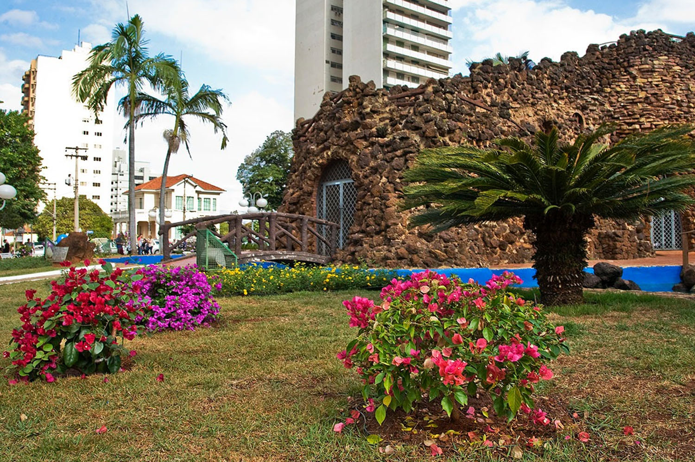
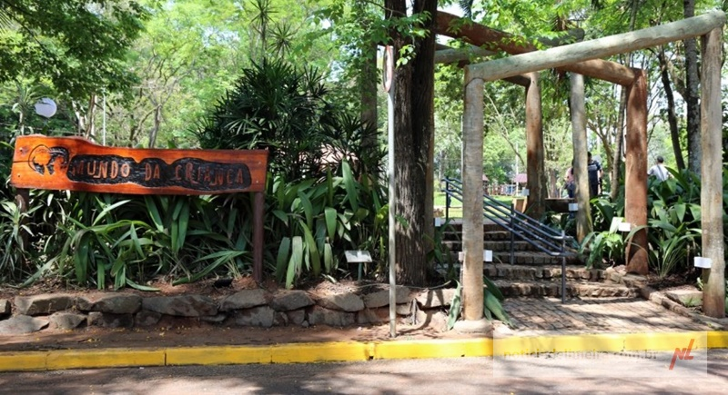
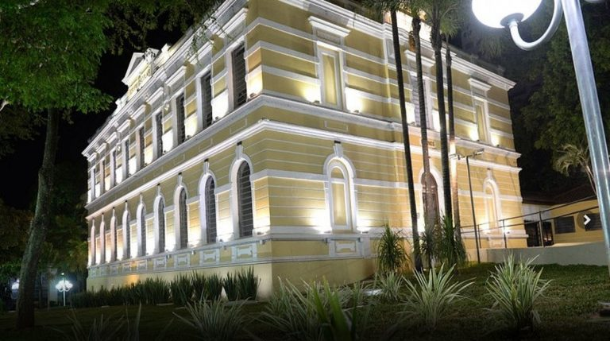

Pontos Turisticos
Gruta da Paz (Gruta Nossa Senhora de Lourdes)
O que é: Um santuário religioso e local de peregrinação, com uma réplica da gruta de Lourdes (França).
Horto Florestal de Limeira (Parque Cidade)
O que é: Um parque ecológico com ampla área verde, lagos, trilhas e espaços de lazer.
Museu Histórico e Pedagógico Major José Levy Sobrinho
Museu instalado em uma antiga mansão, preservando a história de Limeira e região.
